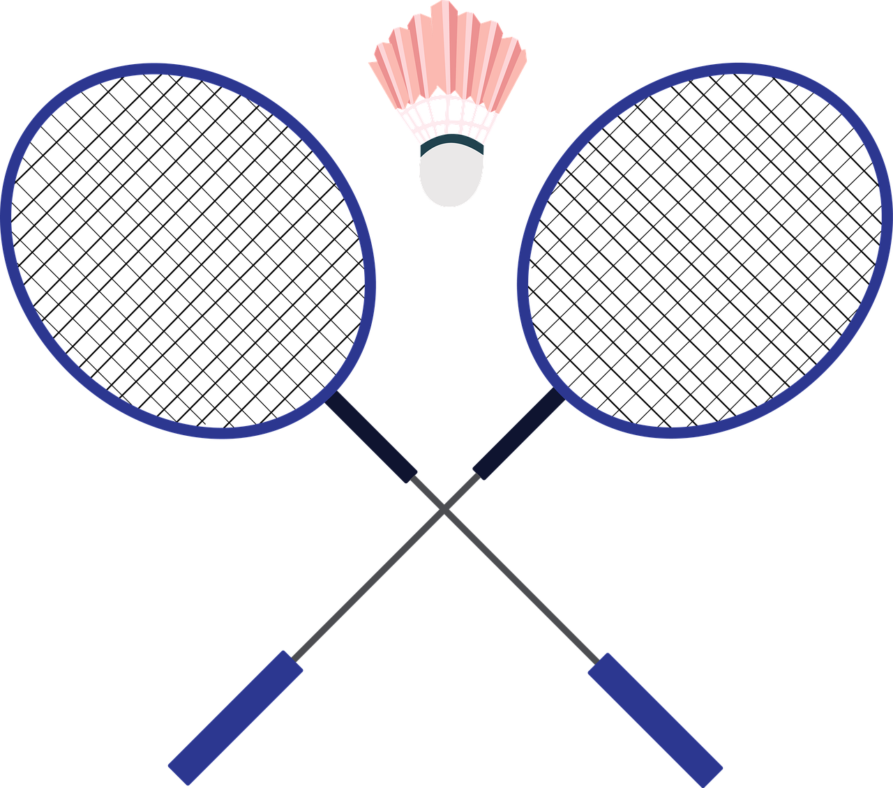

Through this webpage, I wish to communicate my values as
an engineer. I
can not both sit comfortably and stand proud. From badminton and math
contests to my CIV102 course this last semester, I know I perform best
when pushed and challenged. Novelty is oft more demanding than
well-trodden paths. As a result, I try to ensure I am in unexplored
territory. Engineering is hard. However, the innovations and challenges
excite me the most about this field. Fundamentally, I would be an
engineer who constantly tries new things and takes risks. I think
engineers should be ambitious.

During the spring of 2023, I participated in my school board’s regional
badminton tournament at the Golden Horseshoe Athletic Conference (GHAC)
after qualifying for it by winning the board-level competition. The
players were strong, so the entire tournament was a struggle. I was in
the loser's bracket because I had lost one of my earlier games. Losing
even a single set at this point would mean I was done for the day, and
I was already down my first set 16-20. I mounted a comeback and won
21-20. The next game, I was down 17-20. I won. I kept coming back. I
kept advancing until I made it back into the winner’s bracket and
ultimately ended up placing third in the tournament. With my back
pressed against the wall, I performed. And I have noticed that I
perform better under pressure.
Last year, after writing a monthly
online math contest for an organization, Caribou, I was accused of
cheating since I wrote it from home. As a result, I took special care
to write it under direct supervision from my teacher the next month. I
knew a bad performance would reflect poorly on me. Regardless, I
attained my only ever perfect score on that attempt.
Even during my
first-year structures and materials class, CIV102, I mounted a
comeback: from 60% to 90%, and CIV102 is not a class known for its
curve. I have always performed best when the stakes are high and the
challenge is great. On the inverse side of things, I have noticed that
when something is not that hard, I start to grow dull and bored. More
importantly, however, I feel a lot less pride in those achievements.
As a result, I try to be ambitious in the tasks that I undertake,
artificially raising the stakes. The pride of reaching my end goal is
sweeter when the end goal is in a difficult location. I could list many
examples where I learned new skills, because of my ambition for a task,
but I can just save time and talk about this assignment. I created this
webpage with HTML, CSS and JavaScript, despite not knowing HTML, CSS
and JavaScript before I started on this project. However, making myself
responsible for learning these new languages has resulted in much
greater satisfaction now that I am done with the project. I find the
greatest challenges involve learning new things.
I want to be in a
world of innovation where there is constant opportunity for growth
because of the opportunities available to push myself. In Why I
Write , George Orwell wrote: “In any case I find that by the time you
have
perfected any style of writing, you have always outgrown it.” I have a
similar sentiment. Once I have mastered something, I know it is time to
try different methods and approaches and acquire new knowledge. I can
only embrace this mentality in a field that actively encourages
innovation and original thought.
Engineering is hard. Fundamentally, engineering is the application of
science and mathematical knowledge to solve a real-world problem.
Design is a deliberate iterative process meant to solve a problem. As a
result, engineering design refers to the iterative process used to
solve real-world problems with principles founded in math and science.
I know that I would enjoy a career in engineering design as the
challenge and difficulty, as well as the great variability of problems
available to tackle, excites me. I am incredibly grateful for the
invention of machines that have automated the calculation process for
us, as it allows us to tackle problems that do not have obvious
solutions.
As an engineer, my values mean I will be someone who takes
risks and who is unafraid of failure. I think it is more laudable to
fail with courage than it is to succeed with mediocrity and fear. I
truly believe an engineer must be ambitious and willing to push
themselves beyond comfort.